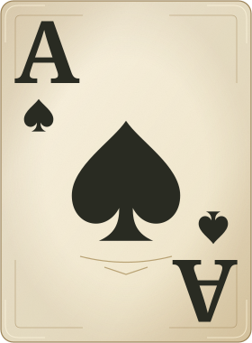
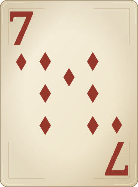

Neue Kartenvorderseiten
Warmes Elfenbeinpapier, dunkle Druckfarben und ein gemaltes Königsbild.



Lesbarkeit in kleiner Tischansicht
Warmes Elfenbeinpapier, dunkle Druckfarben und ein gemaltes Königsbild.


Lesbarkeit in kleiner Tischansicht